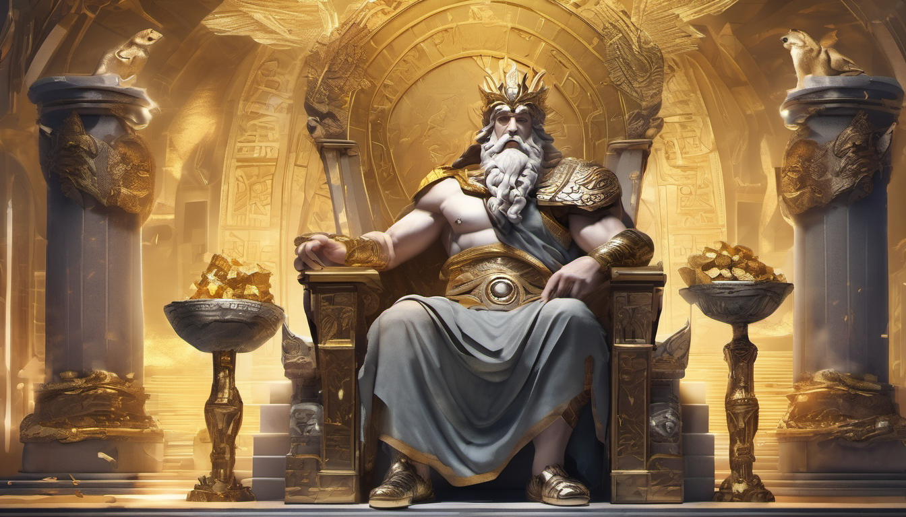
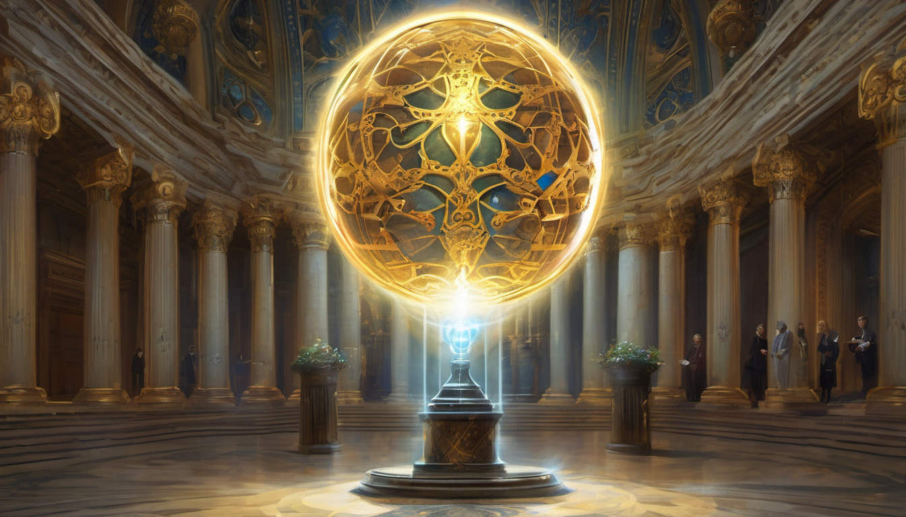
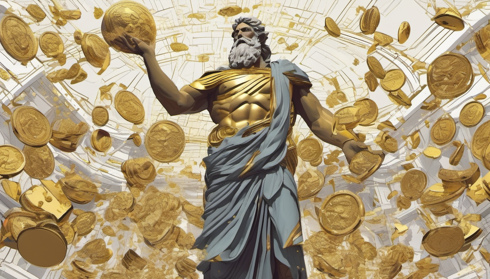

Zeus: Wealth and Glory
Zeus, the mighty god of the sky and thunderbolt, known for his powerful throne on Olympus. But few knew about his most hidden treasure - a treasure kept in the heart of the mountains.

Cunning and wise, Zeus was always a master of everything related to hidden treasures and wealth. His curiosity and inquisitiveness always led him to new discoveries, but this treasure was something extraordinary that even he himself marveled at.
This treasure was located in deep caves where the sun's rays never managed to penetrate. It was filled with marvelous treasures - gold, precious stones, and precious artifacts that even impressed Zeus himself.

But the most valuable treasure was a sphere that shone with divine radiance. This sphere was the key to all the wealth in the world. And Zeus, possessing boundless wisdom, knew that using this key required not only strength but also wisdom.
Zeus used this treasure as a means of kindness and assistance. He used his wealth to provide assistance to those in need. He brought gold to those who suffered and bestowed precious stones upon those who sought beauty.

Thus, Zeus was not just a ruler of wealth; he was its guardian and dispenser. He used his wealth to make the world a better place for all who lived in it.
And although this treasure remained hidden in deep caves, its influence and Zeus's wealth were felt in every corner of the world where he ruled, filling the lives of all with true prosperity and abundance.